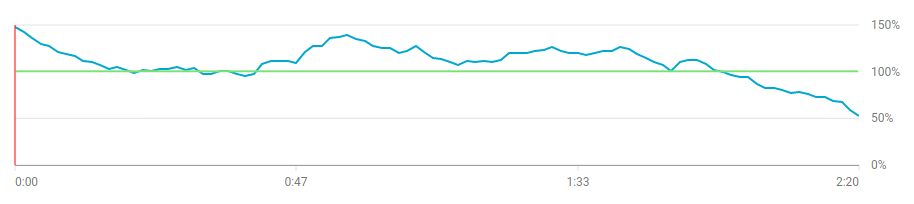

Première diffusion d'un podcast aux étudiants
Après la diffusion de la vidéo aux étudiants, il est temps d’analyser son impact.
Pour rappel, la vidéo avait pour ambition de présenter une fonctionnalité particulière d’un appareil de laboratoire. Elle a été diffusée aux étudiants au début de la semaine durant laquelle se déroulaient les séances nécessitant cette fonctionnalité.
Ce billet va étudier la vidéo selon trois aspects : son analyse au travers de YouTube Studio, son impact sur le déroulement des laboratoires et enfin quelles leçons peuvent être tirées de cette expérience.
Analyse du visionage par les étudiants
Comme expliqué dans la réalisation de la vidéo, le média choisi pour sa diffusion a été YouTube. La justification majeure est la quantité d’outils d’analyse proposés aux créateurs par la plate-forme.
Pour cette analyse, nous allons nous concentrer sur la période « utile » de la vidéo, c’est-à-dire la semaine durant laquelle la manipulation dont parle la vidéo a eu lieu : du 2 au 6 décembre 2019.
Nombre de vues
Commençons par le nombre de fois que la vidéo a été visionnée.
La vidéo ayant été publiée le lundi 2 décembre en début de soirée, il est normal qu’elle n’ait pas accumulé beaucoup de vue le premier jour. En revanche, elle a eu beaucoup plus de succès le deuxième, pour un total de 100 vues sur la semaine. Le public effectivement présent en laboratoire (et donc pouvant bénéficier de cette vidéo) les quatre derniers jours de la semaine était composé d’un total de 102 étudiants. Cela voudrait-il dire que la vidéo a eu un taux de visionnage proche de 100 % ?
Malheureusement non. Un étudiant a très bien pu regarder la vidéo à plusieurs reprises et en pratique, c’est effectivement ce qu’il s’est passé.
Quand on y regarde de plus près, YouTube nous indique qu’il n’y a eut que 73 visiteurs uniques sur la vidéo, ce qui signifie qu’elle a en moyenne été visionnée 1.37 fois par visiteur. Ce sera le premier indicateur qu’il y a quelque chose à améliorer dans la vidéo.
Notons qu’avoir 73 % des étudiants visionnant la vidéo est un score plus que satisfaisant, étant donné que nombre d’entre eux l’ont visionnée pendant le laboratoire à plusieurs sur un même support.
Durée de rétention
Combien de temps les étudiants regardent-ils la vidéo ? Quittent-ils après quelques secondes ou passent-ils la fin ?
En réalité, ils semblent passer plus de temps sur la vidéo que la durée de la vidéo elle-même. Nous avons ici le deuxième indicateur d’imperfection de la vidéo : alors que la vidéo ne dure que 2 minutes et 20 secondes, les visiteurs restent en moyenne 2 minutes et 24 secondes.
Les étudiants reviennent-ils en arrière dans la vidéo ? La regardent-ils plusieurs fois ? Cette indication concorde en tout cas avec la première observation.
Rétention de l’audience
Nous avons à présent la certitude que les étudiants regardent certains passage de la vidéo à plusieur reprises, mais de quels moments s’agit-il précisément ?

Ce graphe indique le taux de visionnage de la vidéo à chaque instant, un taux supérieur à 100 % indiquant que le visiteur est revenu en arrière pour visionner le passage à nouveau. C’est le troisième indicateur qu’un seul passage au travers de la vidéo n’est pas suffisant.
Quand on y regarde de plus près, ces instants supérieurs à 100 % correspondent aux branchements des sondes dans le montage, il est donc compréhensible que les étudiants reviennent en arrière après avoir vu l’information une première fois afin de mimer mes gestes en laboratoire.
Bonus : Quel support utilisent les étudiants ?
| Appareil | Vues | Durée moyenne de visionnage | Vues moyennes par visiteur | Pourcentage moyen visionné |
|---|---|---|---|---|
| Total | 100 | 2:24 | 1.4 | 103.2 % |
| Ordinateur | 69 | 2:38 | 1.3 | 113.0% |
| Smartphone | 28 | 1:51 | 1.4 | 80.0 % |
| Tablette | 3 | 2:14 | 1.5 | 95.8 % |
Toute conclusion tirée de ce tableau ne serait que conjecture, mais on peut supposer que les visionnages en laboratoire sur les PCs fournis composent une bonne partie des vues sur ordinateur. Il serait alors compréhensible que les étudiants reviennent en arrière dans la vidéo pour mieux en mimer le contenu, alongeant la durée moyenne de visionnage.
Quoi qu’il en soit, il reste intéressant de remarque qu’une partie non négligeable des étudiants ont visionné la vidéo sur un smartphone, signe qu’il faut faire en sorte que nos dispositifs soient compatibles avec ce support (on pense à toi, Moodle).
Impact de la vidéo en laboratoire
Immédiatement après la mise à disposition de la vidéo, tous les assistants du laboratoire ont pu remarquer que le nombre de questions afférentes au fonctionnement de l’oscilloscope (le sujet de la vidéo) a drastiquement diminué. Pour les quelques irréductibles, il a suffit de leur indiquer l’existence de cette vidéo qui semblait avoir échappé à leur vigilance pour qu’ils la regardent derechef pendant la séance, répondant ainsi seuls à leur propre question.
Nous pouvons faire ici écho à la définition du problème : la vidéo semble effectivement avoir utilisé cet outil pour s’approprier le matériel de laboratoire. Ce qui à son tour répond à leurs deux demandes identifiées dans les personas : comprendre le matériel et rendre les assistants plus disponibles.
Améliorations
Reprenons les indications que des améliorations sont nécessaires :
- 1.37 visionnages par personne en moyenne
- Une durée moyenne de visionnage plus longue que celle de la vidéo
- Certains passages avec un taux de visionnage supérieur à 100 %
Outre les améliorations quant à la qualité de production de la vidéo déjà abordée dans l’article précédent, il semble que le contenu puisse aussi bénéficier d’une mise à jour.
Quelques pistes pourraient être mises en évidence :
- Accompagner la vidéo d’un documents reprenant des captures de la vidéo avec les connexions à effectuer.
Non seulement le document prendrait du temps supplémentaire à être construit, il ne représenterait qu’un support supplémentaire n’apportant pas de nouvelle information, rendant peu probable sa lecture par les étudiants. - Effectuer une démonstration en début de laboratoire en suivant les étapes de la vidéo.
Certes faisable, mais pose le problème de visibilité par une quarantaine d’étudiants en simultané. - Séparer clairement les étapes lors du montage de la vidéo afin de mieux la structurer.
Cet élément pourrait aider les étudiants, mais peut-être au détriment de la fluidité de la vidéo en hachant son rythme.
Quoi qu’il arrive, il semble innévitable que les étudiants reviennent en arrière dans la vidéo pour mieux en analyser les étapes. Et au final, est-ce vraiment un problème ? N’est-ce pas finalement l’avantage de la vidéo par rapport à la démonstration réelle : pouvoir revoir un passage mal compris ?
Il faut tout de même rester prudent et continuer à s’interroger sur l’utilisation de la vidéo par le public. Il convient de distinguer un taux de visionnage supérieur à 100 % dû à une incompréhension ou au contraire afin de répéter les gestes de la vidéo avec précision. Dans un monde idéal, une vidéo parfaitement claire se suffira d’un visionnage d’une traite et son contenu sera d’une clareté telle qu’il ne sera jamais nécessaire de revenir en arrière pour en répéter les gestes.
Néanmoins, il est particulièrement réjouissant de voir que cette vidéo a pu atteindre la majorité des étudiants, qu’ils l’aient visionnée dans son entièreté, qu’ils en aient été contents et qu’elle a soulagé les assistants, remplissant ainsi pleinement ses objectifs.